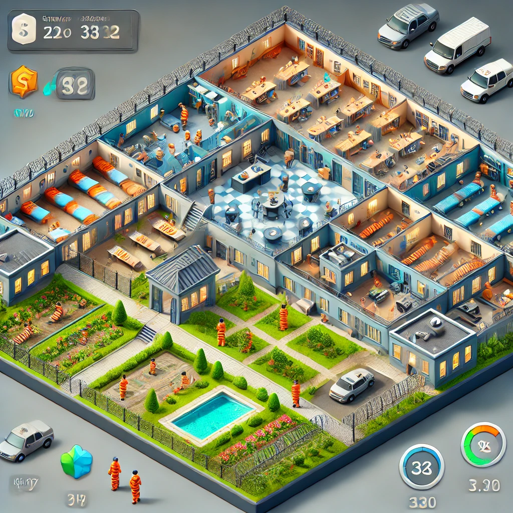

Prison Architect: Escape Prevention Simulator

In this strategic simulation, focus on building secure walls, installing doors, and placing sensors to prevent prisoners from escaping. Survive waves of increasingly cunning escape attempts while managing limited resources. Tackle dynamic challenges as prisoners adapt and evolve their escape tactics.
Play in Your Browser (If Supported)
Once you've built a web version using PyGBag, it will appear here:
Download and Play Locally
Prefer to play locally? Download the game:
Simply download, unzip if needed, and run the executable.